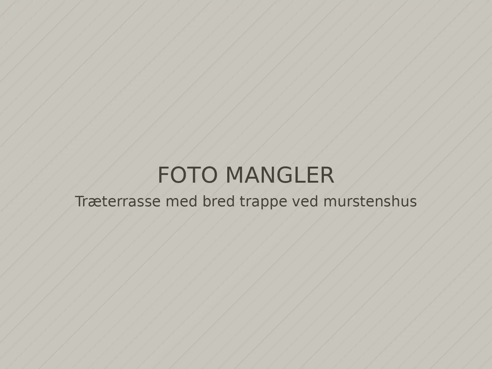
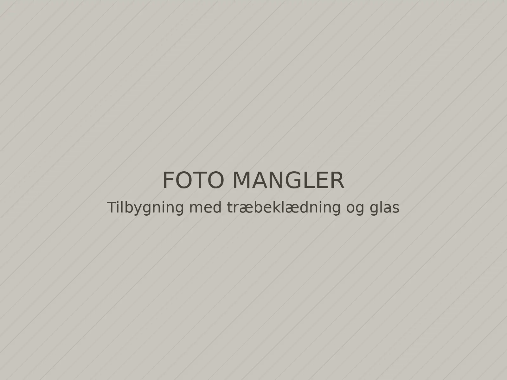
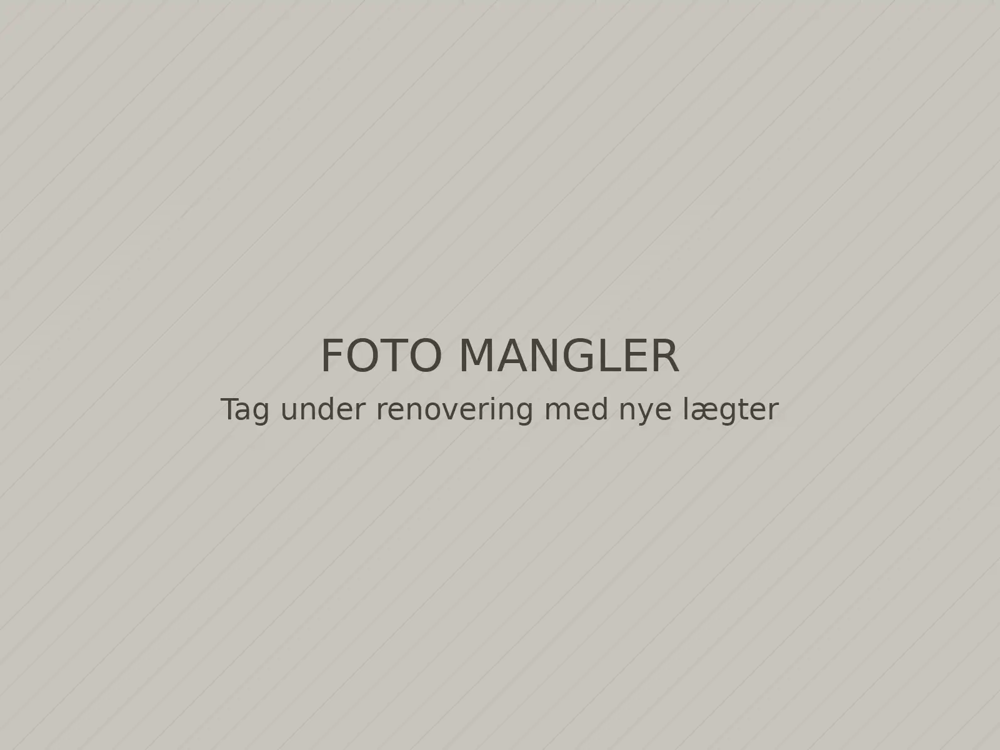

Forside / Ydelser
Ydelser
Vi arbejder for private husejere i Sydsjælland. Her kan du se, hvad vi typisk laver, og hvad du skal tænke over, før vi går i gang.

Illustrativt billedeUdendørs
Terrasser og hegn
En terrasse skal ligge rigtigt i forhold til huset, solen og haven. Vi hjælper med placering, højde og valg af træ, og vi bygger hele vejen fra fundament til sidste bræt.
Typiske opgaver
- Terrasser i trykimprægneret fyr, lærk eller hårdttræ
- Trapper, rampe og trin ned til haven
- Læhegn, plankeværk og låger
- Overdækning af terrasse
Til en pris skal vi bruge terrassens omtrentlige mål og et billede af stedet.
 Illustrativt billede
Illustrativt billedeUdskiftning
Vinduer og døre
Vi skifter enkelte vinduer eller hele huset. Vi tager de gamle ud, monterer de nye i lod og vater, fuger og sætter lysninger og lister op indvendigt.
Typiske opgaver
- Udskiftning af vinduer i træ, træ-alu eller plast
- Nye yder- og terrassedøre
- Ovenlysvinduer
- Nye fuger, lysninger og indvendige lister
Vi måler selv op, før vinduerne bestilles, så de passer til hullet.

Illustrativt billedeOmbygning
Tilbygninger
En tilbygning har mange fag på én gang. Vi står for tømrerarbejdet og koordinerer med murer, elektriker og VVS'er, så du har én at ringe til.
Typiske opgaver
- Tilbygning og havestue
- Carport og udhus
- Ny planløsning med nye vægge
- Kvist og ombygning af tagetage
Vi hjælper dig med at afklare, om opgaven kræver byggetilladelse, før vi går i gang.

Illustrativt billedeTag og loft
Tag og efterisolering
Vi udskifter undertag, lægter og tagbelægning og efterisolerer lofter, så huset holder bedre på varmen.
Typiske opgaver
- Nyt tag på parcelhus og sommerhus
- Efterisolering af loft
- Udskiftning af stern og vindskeder
- Reparation efter stormskade
 Illustrativt billede
Illustrativt billedeIndvendigt
Indvendigt snedkerarbejde
Skabe, reoler og trapper, der passer præcist til rummet, også når væggene ikke er helt lige.
Typiske opgaver
- Indbyggede skabe og reoler
- Trapper og gelændere
- Trægulve og lofter
- Nye indvendige døre og karme
Ved du ikke, hvad opgaven kræver?
Skriv kort, hvad du gerne vil have lavet. Vi vender tilbage og foreslår næste skridt.